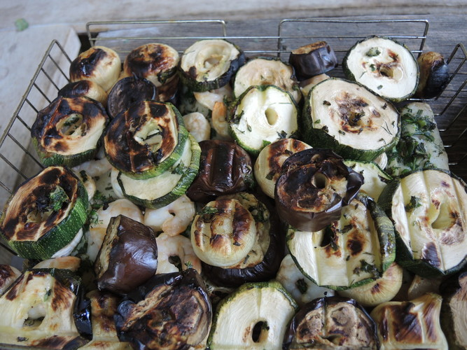

Receptai su patisonais, patiekalai iš patisonų | Gaspadine.lt
- Receptai su nuotraukomis | Patiekalai | Receptas
Posts about RIMTI PATIEKALAI written by AML. Mityboje man svarbiausia balansas ir įvairovė, o valgydama siekiu pamaitinti ne tik alkį, bet ir kūną. - Varškės patiekalai – Saulėta virtuvė
patisonų receptai. Patiekalai su patisonais. Gaspadinė tau atrinko geriausius receptus. Kiekvienas receptas vertas dėmesio. - Receptai | Patiekalai
Patiekalai iš faršo gali atrodyti kaip įprastas kasdienis patiekalas, tačiau, iš tiesų, viskas priklauso nuo fantazijos ir pateikimo būdo. Jeigu užkepsime faršą su bulvėmis ir kitomis daržovėmis orkaitėje arba iškepsime lazaniją, kuri neįsivaizduojama be skanaus faršo – tai bus puikus šventinių pietų ar vakarienės ... - Receptai su patisonais, patiekalai iš patisonų | Gaspadine.lt
Pavasariniai patiekalai. Atėjus pavasariui norisi lengvų patiekalų, o trumpėjančios dienos skatina ieškoti vis paprastesnių receptų. Mes garantuojame, kad čia esantys pavasariniai patiekalai bus gaivūs ir labai greiti. - Pagrindiniai patiekalai - 1000receptų.lt
Receptai, patiekalai, receptas ir jo gaminimas su nuotraukomis. Populiariausių lietuviškų valgių patiekalai su nuotraukomis. - Ritos receptai : Laužo ir grilio patiekalai
Skanių patiekalų receptai: užkandžiai, sriubos, mėsos patiekalai, žuvies patiekalai, daržovių patiekalai, makaronai, stalo puošimas - Mėsa, mėsos patiekalai - receptai - Receptai | Patiekalai
Varškės patiekalai. Blynai KARŠTIEJI PATIEKALAI LENGVI KĄSNELIAI Pusryčiai Varškės patiekalai Paprasčiausi kepti varškėčiai. Asta 29 Rgs ’20. Varškė – tas pieno produktas, kurį visada rastumėte mūsų šeimos šaldytuve, o varškėčiai – patiekalas, kurį kas savaitę sąžiningai įrašau į mūsų savaitės meniu. Skanu ... - Pavasariniai patiekalai - Maisto Kelionės
RECEPTAI, kurie įkvėps Jus gaminti! Čia jų rasite itin daug iš įvairiausių pasaulio šalių ir vietovių. Geri ir aiškiai aprašyti receptai, taip pat video receptai, kurie padės Jums pasigaminti ir ant stalo patiekti tik pačius skaniausius bei gardžiausius patiekalus! Geriausia vieta mėgstantiems gaminti. - Mėsos patiekalai - skaniausi ir lengviausi receptai ...
be gliuteno, be karvĖs pieno, be kiauŠiniŲ, paukŠtiena | mĖsa, rimti patiekalai, sriubos. 3 receptai su rudens derliumi. 2020-09-04 2020-09-10 sukurta aml 3 receptai su rudens derliumi komentarų: 2. - RIMTI PATIEKALAI – ANT MEDINĖS LENTELĖS
Mėsos patiekalai „Dešra butelyje“: paprastas ir skanus kitokios dešros receptas. Mėsos patiekalai. Nuostabaus skonio mėsos kepsnys: puikiai tiks ir romantiškai vakarienei! Redaktorė L.-9 rugsėjo, 2020. 0. Mėsos patiekalai. Gardžiai kvepiantys ir sultingi kotletai su cukinija. Puikus receptas!

Gaspadine.lt - receptai, patiekalai. Vėlykų receptai, margučiai. Lengvi, pigūs ir skanūs patiekalai. Marinavimas, konservavimas, džiovinimas. Atsiųskite savo receptą ir nuotraukas! Atsiųsti receptą Receptai Konkursai Straipsniai Ingredientai
Patisonai
Patisonai (Cucurbita pepo, brevicaulis, melopepo), kaip ir aguročiai — paprastųjų moliūgų atmaina. Tai įvairių spalvų vasarinis augalas, skoniu prilystantis cukinijoms ar baklažanams. Vaisiai - gėlės žiedo formos. Auginami ir Lietuvoje. Auga kaip... Skaityti daugiau > >Patiekalai iš patisonų
Gaivusis patisono dubuo
Sudėtinės dalys: Medus, Spanguolės, Patisonai
Kepti patisonai
2Sudėtinės dalys: Kiaušiniai, Džiūvėsėliai, Druska, Sviestas, Grietinė, Patisonai
Kiaulienos maltinis su daržovių įdaru
Sudėtinės dalys: Moliūgai, Muskatas, Paprika, Salierai, Svogūnai, Kiaulienos faršas, Kiaušiniai, Batonas, Džiūvėsėliai, Majonezas, Manų kruopos, Druska, Prieskoniai, Baltieji pipirai, Patisonai
Konservuota cukinija
3Sudėtinės dalys: Cukinijos, Paprika, Svogūnai, Česnakai, Patisonai, Aliejus, Actas, Cukrus, Pomidorų padažas
Marinuoti patisonai
Sudėtinės dalys: Patisonai, Vanduo, Actas, Druska, Cukrus, Krapai, Pipirai, Česnakai
Marinuoti patisonai
2Sudėtinės dalys: Česnakai, Krapai, Morkos, Pomidorai, Patisonai
Patisonai su grybais ir daržovėmis
1Sudėtinės dalys: Morkos, Pomidorai, Salierai, Kvietiniai miltai, Druska, Sviestas, Patisonai, Grybai
Patisonai tešloje
Sudėtinės dalys: Taukai (kiaulių), Kiaušiniai, Kvietiniai miltai, Druska, Patisonai, Mielės
Patisonų blyneliai
1Sudėtinės dalys: Cukrus, Kiaušiniai, Kvietiniai miltai, Soda, Druska, Aliejus, Sviestas, Patisonai
Patisonų ir svarainių kompotas
1Sudėtinės dalys: Cukrus, Svarainiai, Vanduo, Patisonai
Patisonų salotos
1Sudėtinės dalys: Cukrus, Krapai, Pomidorai, Majonezas, Druska, Patisonai
Patisonų salotos su citrina
Sudėtinės dalys: Krapai, Druska, Aliejus, Patisonai
Patisonų sklindžiai
Sudėtinės dalys: Taukai (kiaulių), Kiaušiniai, Kvietiniai miltai, Soda, Druska, Sviestas, Patisonai, Cukatos
Robertos marinuoti patisonai
Sudėtinės dalys: Cukrus, Česnakai, Gvazdikėliai, Peletrūnas, Petražolės, Actas, Vanduo, Druska, Kvapieji pipirai, Patisonai
Robertos patisonų blyneliai
2Sudėtinės dalys: Cukrus, Kiaušiniai, Kvietiniai miltai, Soda, Druska, Aliejus, Sviestas, Patisonai
Su krapais konservuoti patisonai
1Sudėtinės dalys: Krapai, Medus, Actas, Vanduo, Patisonai
Troškinta žuvis su daržovėmis
Sudėtinės dalys: Bulvės, Krapai, Morkos, Petražolės, Salierai, Druska, Prieskoniai, Žuvis, Patisonai
Virti patisonai padaže
Sudėtinės dalys: Druska, Sviestas, Patisonai
Tipai
Alkoholiniai gėrimai Alus Degtinė Brendis Viskis Apkepai Blynai Desertai Gėrimai Kepiniai, pyragai Kepsniai, antrieji Konservuoti patiekalai Košės, tyrės Mišrainės, salotos Padažai, kremai Saldumynai Sriubos Sumuštiniai Troškiniai Uogienės UžkandžiaiIš ko gaminama
Avienos patiekalai Bulvių patiekalai Daržovių patiekalai Grybų patiekalai Jautienos patiekalai Jūros gėrybių patiekalai Kiaulienos patiekalai Kiaušinių patiekalai Miltų ir kruopų patiekalai Paukštienos patiekalai Pieno patiekalai Sojos patiekalai Sūrio patiekalai Triušienos patiekalai Uogų, vaisių patiekalai Veršienos patiekalai Žuvies patiekalai Žvėrienos patiekalaiGaminimo būdas
Grilyje, lauže Džiovinti Garuose Kepti Išmaišyti Marinuoti Mikrobangėje Orkaitėje Rauginti Išrūkyti Pasūdyti Plakti Sušaldyti Ištroškinti IšvirtiProginiai patiekalai
Mamos dienos patiekalai Velykiniai patiekalai Užgavėnių patiekalai Valentino dienos patiekalai Naujųjų Metų patiekalai Tėvo dienos skanėstai Gimtadienio patiekalai Helovynas Kalėdų patiekalai Kūčių patiekalai Patiekalai Joninėms Vestuviniai patiekalaiYpatybės
Aštrūs patiekalai Egzotiniai patiekalai Pigūs patiekalai Greitai pagaminami Pikantiški patiekalai Pusryčiams Skalsūs patiekalai Švediškam stalui Užkanda prie alkoholio Patiekalai vegetarams VaikamsGydomieji
Dietiniai patiekalai Gydyti ligas Nuo peršalimo Skrandžiui atgaivinti Sveikuolių patiekalaiPopuliariausi receptai
Šokoladiniai keksiukai Minkšti žagarėliai Minkšti varškės žagarėliaiNaminiai koldūnai Purus obuolių pyragas su perliniu cukrumi Ypatinga silkė pataluose
Skaitomiausi straipsniai
Maisto tinklaraštininkai jūsų virtuvėje! Trys patikrintų receptų knygos
Jei esate tinklaraščių gerbėjas, žinote, kaip lengva prisirišti prie tam tikro balso, to žmogaus kuriamos...
© 2020 Gaspadine.lt Kopijuoti bei platinti galima tik gavus raštišką UAB All Media Digital sutikimą Privatumo politika [email protected] Reklama - [email protected]
